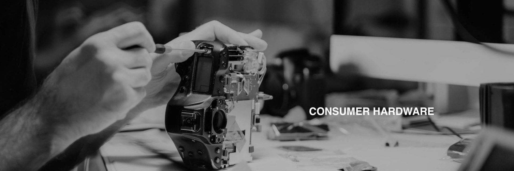

MECHANICAL ENGINEERING JOBS IN TECH WILL FUEL THE FUTURE.
If you are a MechE or MechE student, this is your opportunity.
CAN YOU SEE IT HAPPENING AROUND YOU?
HARDWARE IS THE FUTURE
All of this sounds abstract & grandiose, but you can be part of this revolution.
Wayne Gretzky said it best: skate to where the puck is going, not where it's been.
The mechanical engineers that take advantage of this opportunity in the tech industry are positioned for both financial wealth and overall fulfillment.

Today's best mechanical engineers work at Apple instead of P&G and SpaceX instead of Boeing.
Why?
Maybe you didn’t even know you could get a job in tech as a mechanical engineer.
But mechanical engineers are needed, now more than ever in the tech industry.
THE PROBLEM
But with access to the right information, the pie is for anyone’s taking.
OUR SOLUTION
We built Hardwareinterviews.FYI as a fully-free online database of interview questions to use in 2020. It still is - check it out by clicking the left link below.
Now, we're introducing Hardware.FYI premium, our start-to-finish course on how to land a mechanical engineering job in tech.
Here's what premium offers:
We built Hardware FYI premium to democratize the knowledge required to land mechanical engineering jobs in tech.
We know this resource will give you the edge you need, because what we teach isn’t even taught at some of the best universities in the country.

TRACK RECORD
HardwareInterviews.FYI accrued over 15,000 average monthly page visits in 2021.
Product Design Engineer at Apple
Hardware.FYI was hands down the best online resource out there for preparing for technical mechanical engineering interviews. So many industry specific topics like GD&T are barely covered by my school's curriculum, and Hardware.FYI was able to fill in the gaps for these topics.
PRICING